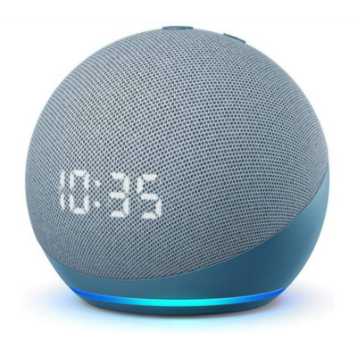

A IoT está transformando diversos setores, e a química não é exceção. Sensores químicos conectados à IoT estão sendo utilizados em uma variedade de aplicações, desde monitoramento ambiental até controle de processos industriais e diagnósticos médicos. No monitoramento ambiental: Sensores químicos IoT são utilizados para detectar e monitorar poluentes no ar, na água e no solo, fornecendo dados em tempo real sobre a qualidade do ambiente. E, no controle de Processos Industriais: Pode otimizar processos através do monitoramento contínuo de reações químicas e condições operacionais. Sensores IoT podem medir parâmetros como pH, temperatura, pressão e concentração de reagentes, garantindo que as reações ocorram nas condições ideais. Já no diagnósticos Médicos: Sensores químicos IoT são utilizados em diagnósticos médicos, como o monitoramento contínuo de glicose em pacientes diabéticos, melhorando a gestão de saúde.

Alexa
Artigos